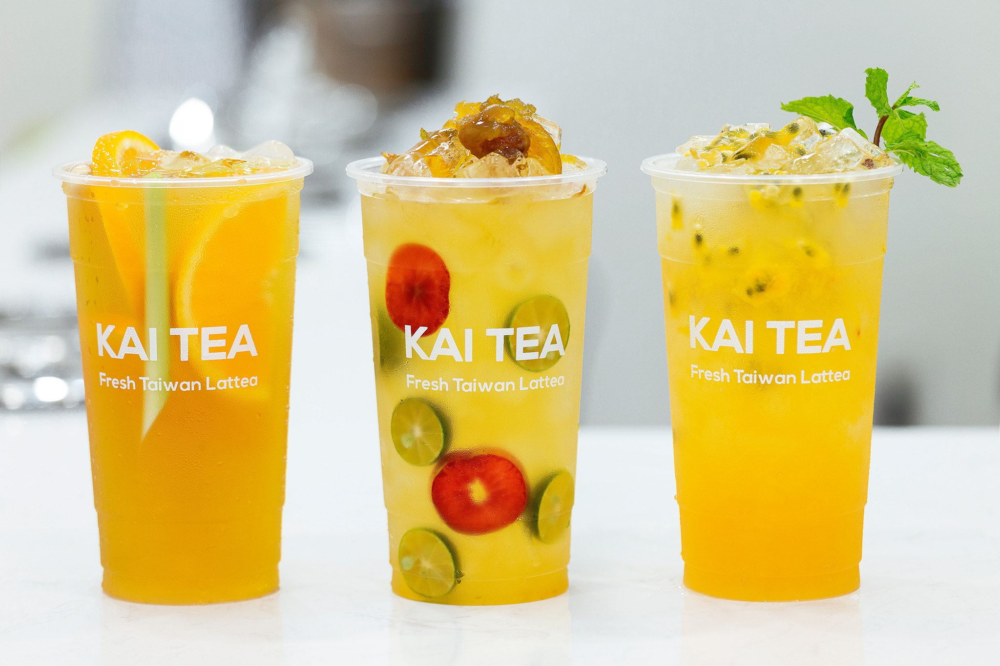
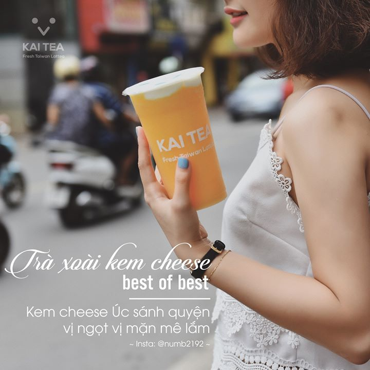
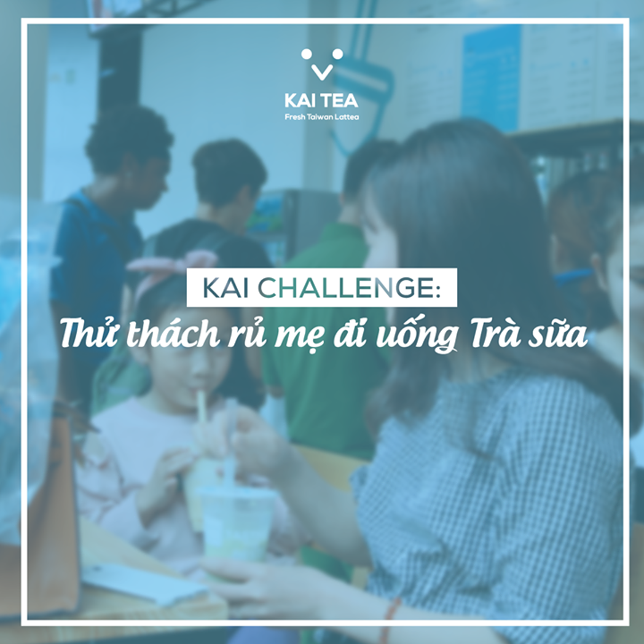
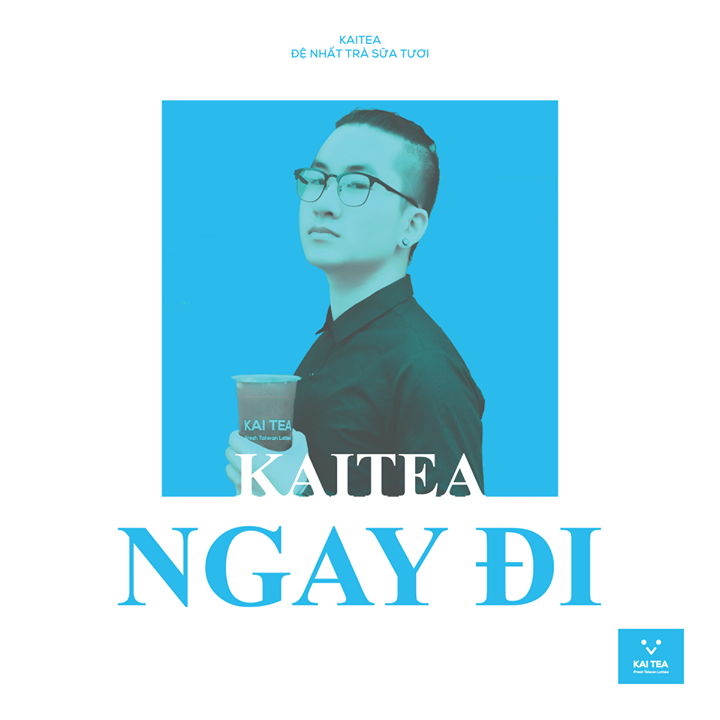

KAI TEA - ĐỆ NHẤT TRÀ SỮA TƯƠI

Khi trà sữa trở thành một thức uống thường nhật, một ly trà sữa không chỉ cẩn NGON mà còn cần tốt cho sức khỏe; chính vì vậy Kai Tea đã ra đời và trở thành thương hiệu đi đầu tại Việt Nam với dòng sản phẩm TRÀ SỮA TƯƠI sử dụng 100% sữa tươi Newzealand thay thế cho bột sữa thông thường. Không chỉ dừng lại ở sữa tươi, mọi nguyên liệu tạo nên ly trà sữa Kai Tea đều được lựa chọn kỹ lượng và trải qua quy trình sơ chế - pha chế nghiêm ngặt trước khi tới tay khách hàng.
TRÀ HOA QUẢ
Đừng để nóng bức làm bạn tụt mood!!!
Đập tan cái nóng ngay với bộ ba REFRESH cực đỉnh nhả Kai: LỤC TRÀ PHÚC BỒN TỬ, TRÀ XOÀI KEM CHEESE, MATCHA NHẬT BẢN SỮA TƯƠI
😍 Kai không đơn thuần là một tiệm trà sữa? Vì đến Kai, không chỉ mua trà sữa 🥤, đó còn là mua sức khỏe 💪, và mua cả niềm vui 🤗🤗
GÓC HỎI NHỎ???
Có khi nào bạn lâm vào cảnh : ''Chọn con tim hay lặng nghe lý trí'' rằng: 💓💓 con tim một lòng một dạ hướng về trà sữa mà lý trí 🧠🧠🧠 khăng khăng chống đối lo sợ vài tiếng tập gym "đổ sông đổ biển" 💪💪 hay không?
Có những lúc ''Lòng thì muốn uống tất và bụng chỉ cho phép một và chỉ một mà thôi 😭'': Fresh Milk Tea 🥛🥤 là dòng đặc trưng của Kai, healthy khỏi nói rồi, cơ mà Fruit Milk Tea 🍍🍊🍓 cũng thơm lừng, mát lạnh cực đã; còn Cheese Tea 🧀🧀 thì sóng sánh, ngầy ngậy vô cùng cuốn hút.
Kai’s Blog
👣Ngay từ khi bắt đầu, KAI TEA 🥤 đã đặt ra sứ mệnh và mục tiêu có thể đem một thức uống không những cần ngon mà phải tốt cho sức khỏe đi tới khắp mọi miền tổ quốc 👣. Nổi bật với dòng Trà sữa sữa tươi (Fresh Milk Tea) sử dụng sữa tươi 🥤🥛Newzealand nguyên chất thay cho sữa bột thông thường, KAI TEA đã rất may mắn chinh phục được không chỉ các bạn trẻ yêu trà sữa mà còn bởi rất nhiều các mẹ 👨👩👦👦👨👩👦👦 và các em nhỏ !!!
New

Thử thách Rủ mẹ đi uống Trà sữa 😎😎

Nắng nóng lắm rồi ☀☀, Chạy tới KAI ngay đi 🏃♂🏃♀!!! Điều hòa mát lạnh đã bật sẵn chờ KAI ghé chơi! 🥛Fresh Milk Tea healthy nạp ngay năng lượng, Tropical Fruit Tea 🍊🍍🍓 siêu refresh hay 🧀 Cheese Tea mát cực mát đã sẵn sàng chờ Kaiers tới rước!!